Act IStop 1 of 68 · 4.1 GaEP01a
Vent protocell
Iron-sulfur micropore · pores ~1–100 µm
Black smoker hydrothermal vent on the Mid-Atlantic Ridge
Every specimen photograph, fossil cast, paleo-reconstruction, and hardware plate in the 68-stop journey is openly licensed under Creative Commons (CC0, CC BY, CC BY-SA) or in the Public domain via Wikimedia Commons and PhyloPic. Open the 68-stop visual contact sheet →
Click any plate to jump to its moment on the Journey, or follow the licence and Wikimedia Commons links for the full-resolution file and attribution history.


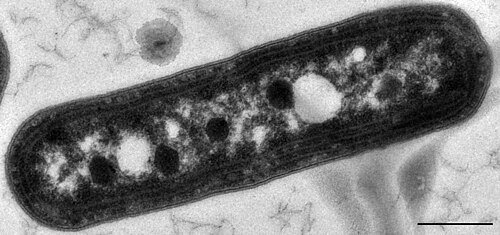
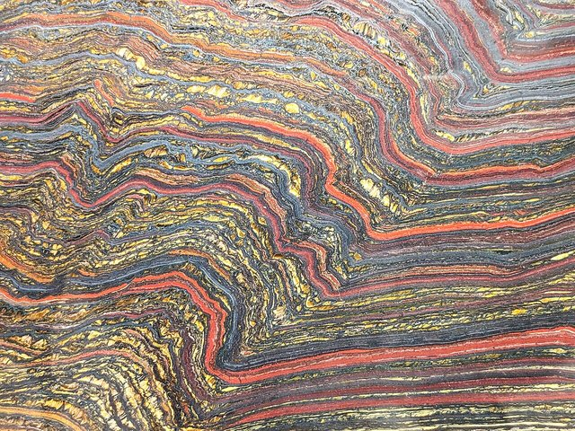


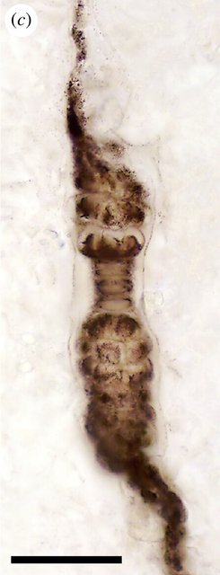
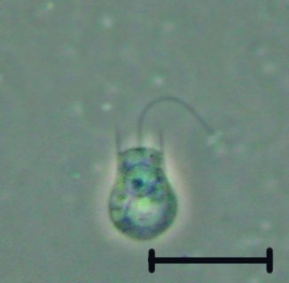

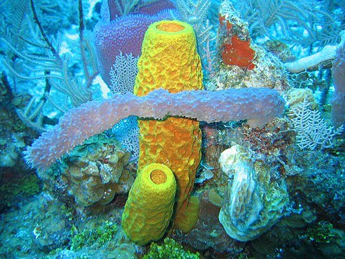

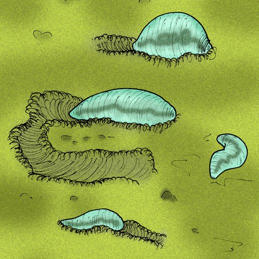


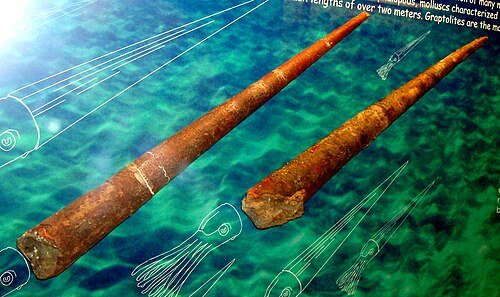


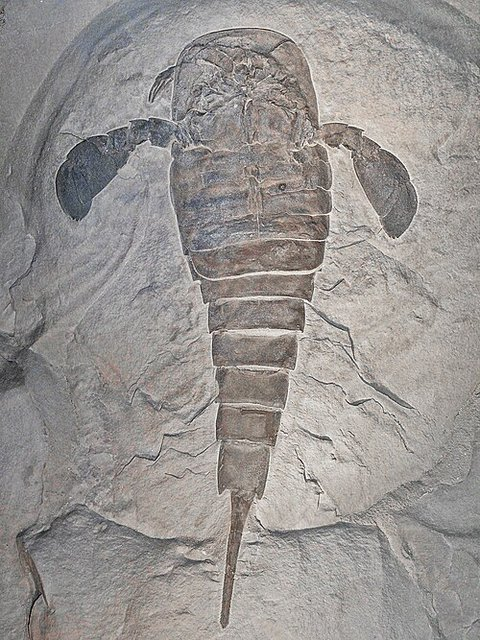

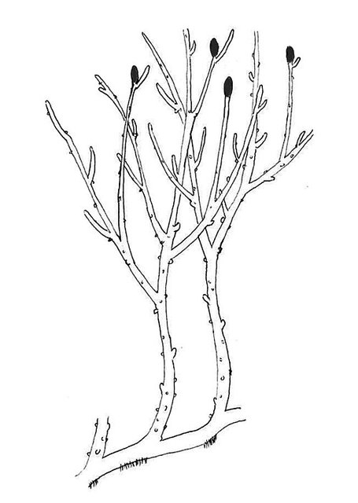
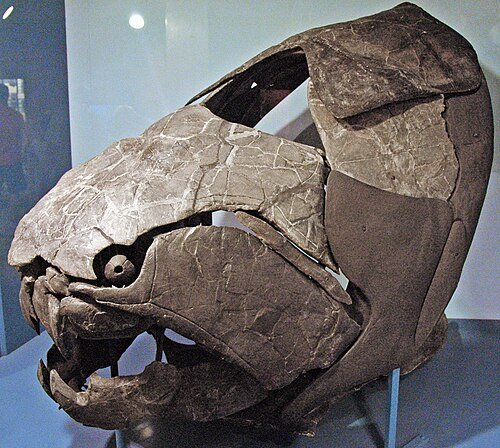


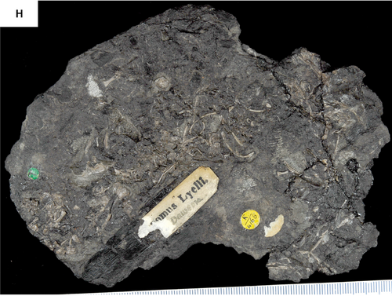

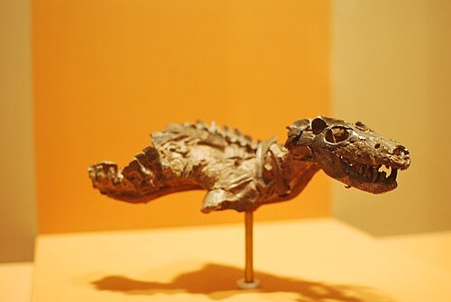
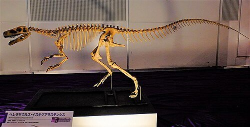

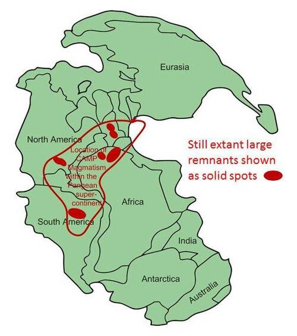


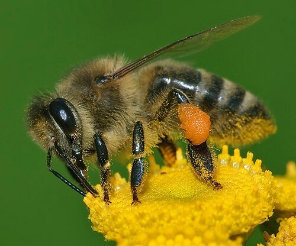
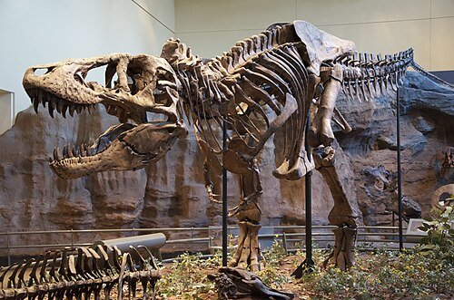


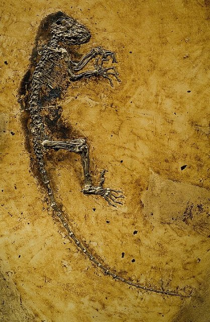
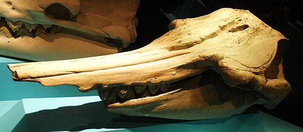

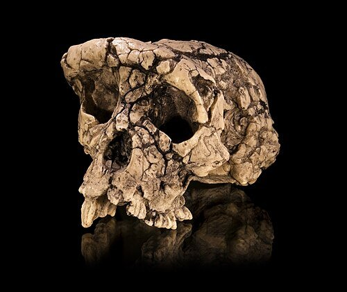

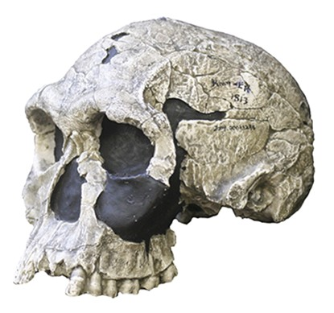

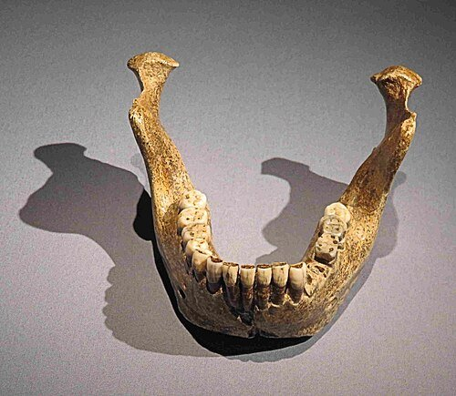
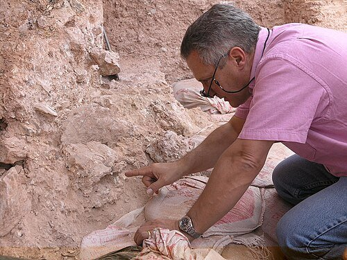
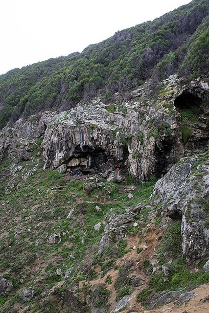

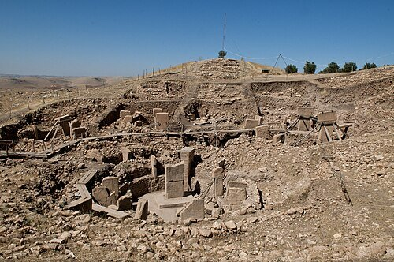
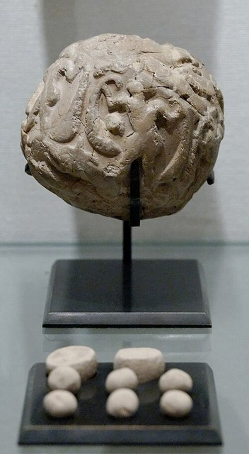

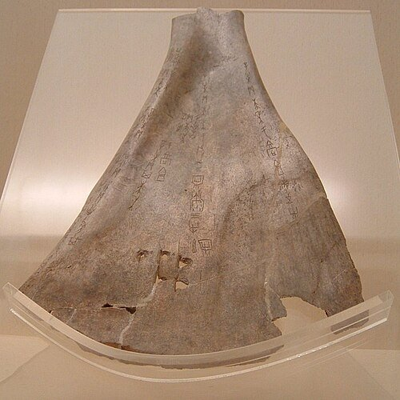
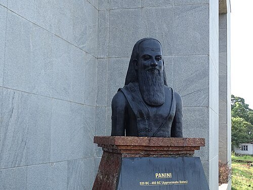
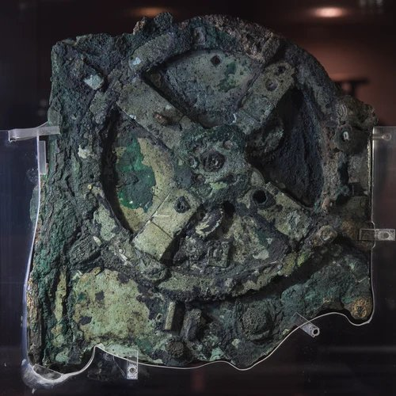
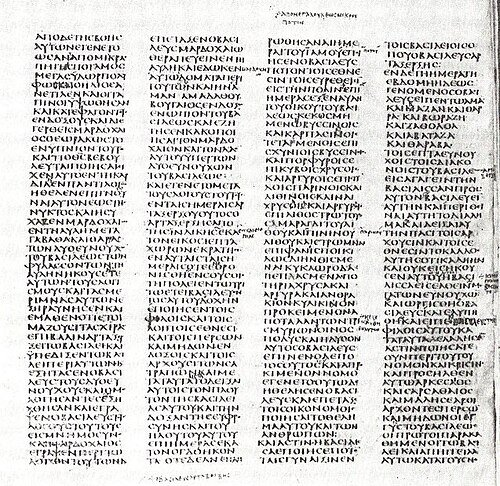

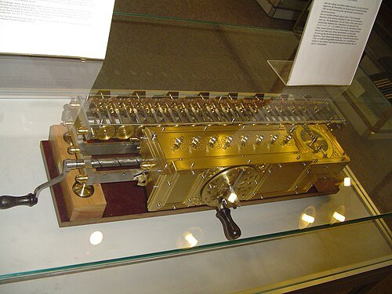

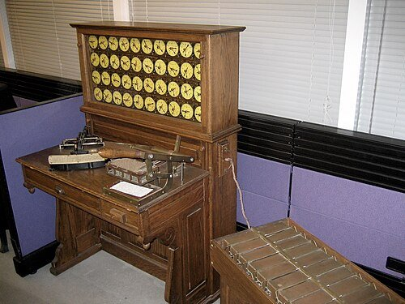
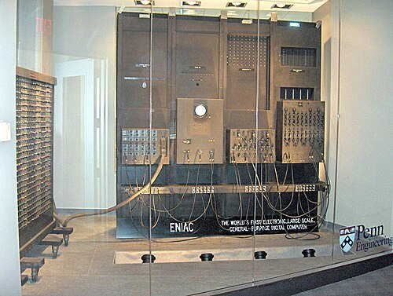
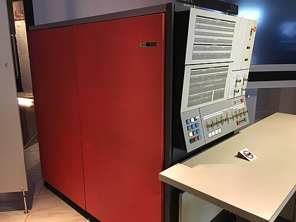
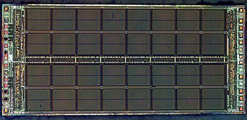
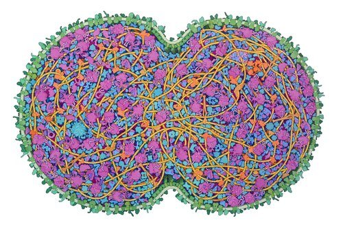

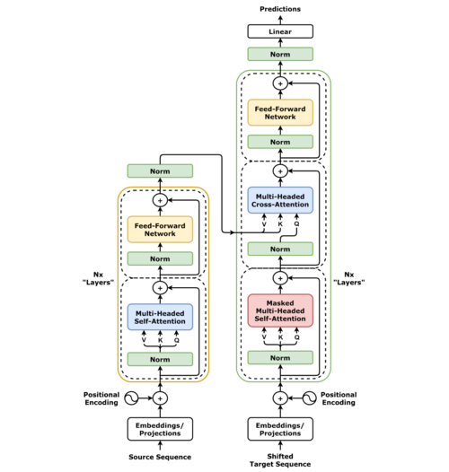
Open-licence organism silhouettes from PhyloPic paired with fossil and paleo-restoration stops.
Open-licence photographs, micrographs, museum specimens and scientific diagrams paired with the 185 inventions in the Tree of Inventions and Journey.